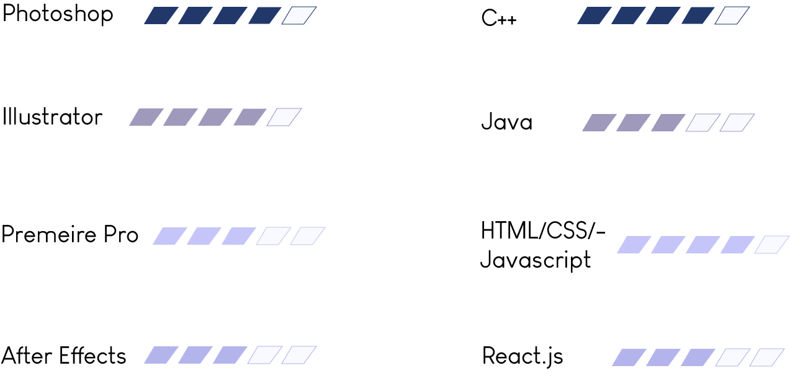

Developer
I love problem solving.
As a developer, I have worked on full-stack web applications, mobile applications, and small-scale programs with back-end code in C++/C and Java. I gained experience with collaboration and teamwork, demonstrated responsibility for myself, and delivered consistent, quality code at my internships. Wherever I go next, I hope to use the skills I've gained and make a difference.
Student
I am a member of University of Southern California, Class of 2019, pursuing a Bachelors of Science in Computer Science
and Honors in Multimedia Studies.
As an undergrad at USC, I volunteered as a tutor for the South Central community with Teach for Los Angeles, as well as
created a curriculum in computer science for 3rd graders with Joint Educational Project (JEP). I maintained web content
for USC Mureality, an art and activism club, and sharpened my technical skills with Scope, USC's computer science club.
Creator
Media + technology. Watch me create.
